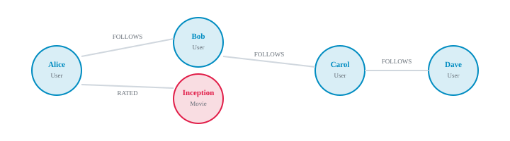

Graph Databases with Neo4j: Hands-On
Chapter 1
Introduction
Graph databases store data as nodes and relationships, making them perfect for connected data like social networks, recommendation engines, and fraud detection. Neo4j is the most popular graph database, and this tutorial is entirely hands-on.
What you'll learn
- ✓ Install and run Neo4j locally
- ✓ Write Cypher queries
- ✓ Model nodes and relationships
- ✓ Query graph patterns
- ✓ Connect from Node.js
- ✓ Build a movie recommendation graph
Before you start
- Comfortable with SQL basics.
- Node.js installed for the driver chapter.
- Docker is the easiest way to run Neo4j locally.
More practice ideas
- Model your own social network graph.
- Build a fraud detection query for circular transactions.
- Create a recommendation engine for e-commerce products.
Chapter 2
Why Graph Databases?
Relational databases struggle with deeply connected data. Graph databases traverse relationships natively, making queries faster and more expressive.
Social network example

When to use a graph database
- Social networks and recommendations.
- Fraud detection and identity graphs.
- Knowledge graphs and master data management.
- Network and IT operations mapping.
Chapter 3
Installing Neo4j
The fastest way to run Neo4j is with Docker. You can also download Neo4j Desktop or use Neo4j AuraDB, the managed cloud service.
# Or
use Docker Compose
cat >
docker-compose.yml <<'EOF'
version: "3.8"
services:
neo4j:
image:
neo4j:latest
ports:
- "7474:7474"
- "7687:7687"
environment:
- NEO4J_AUTH=
neo4j/password123
volumes:
- neo4j_data:/data
- neo4j_logs:/logs
volumes:
neo4j_data:
neo4j_logs:
EOF
docker-compose up -d
Checkpoint
Start Neo4j and open Neo4j Browser. Log in and run
RETURN 1 + 1
to confirm it works.
← Previous
Next: Cypher →
Chapter 4
Cypher Basics
Cypher is Neo4j's query language. It uses ASCII-art patterns to describe nodes and relationships, making graph queries readable and intuitive.
Copy
// Return
a simple value RETURN 1 + 1 AS result;
// Match
all nodes MATCH (n) RETURN n LIMIT 10;
// Count
all nodes MATCH (n) RETURN count(n) AS total;
Cypher pattern syntax
(n)
— a
node.
-[r]-
— an undirected relationship.
-[r:>]-
— a directed relationship.
(p:Person {name: "Ada"})
— labeled
node with property.
← Previous
Next: Nodes →
Chapter 5
Creating Nodes
Nodes represent entities. Labels group nodes by type, and properties store attributes.
Copy
// Create
a single person CREATE (p:Person
{name: "Tom Hanks",
born: 1956}
) RETURN p;
// Create
multiple people CREATE (m:Person
{name: "Meg Ryan",
born: 1961}
), (n:Movie
{title: "You've Got Mail",
released: 1998}
), (d:Person
{name: "Nora Ephron",
born: 1941}
) RETURN m,
n,
d;
// List
all movies MATCH (m:Movie) RETURN m.title,
m.released;
Checkpoint
Create 3 Person nodes and 2 Movie nodes. Query them with
MATCH
and verify the results in Neo4j Browser.
← Previous
Next: Relationships →
Chapter 6
Relationships
Relationships connect nodes and can also have properties. Direction matters, and every relationship must have exactly one type.
Copy
// Connect
Tom Hanks to Forrest Gump MATCH (p:Person
{name: "Tom Hanks"}
), (m:Movie
{title: "Forrest Gump"}
) CREATE (p)-[r:ACTED_IN
{roles: ["Forrest Gump"]
}
]->(m) RETURN r;
// Connect
a director MATCH (d:Person
{name: "Robert Zemeckis"}
), (m:Movie
{title: "Forrest Gump"}
) CREATE (d)-[:DIRECTED]->(m);
// Find
all actors in a movie MATCH (p:Person)-[:ACTED_IN]->(m:Movie
{title: "Forrest Gump"}
) RETURN p.name;
Quick Quiz
In Neo4j, every relationship must have:
Exactly one type and direction
At least one label
A unique ID property
← Previous
Next: Querying →
Chapter 7
Querying Patterns
Graph queries traverse relationships naturally. You can find friends of friends, co-actors, shortest paths, and recommendation candidates.
Copy
// Find
all movies Tom Hanks acted in MATCH (p:Person
{name: "Tom Hanks"}
)-[:ACTED_IN]->(m:Movie) RETURN m.title,
m.released;
// Find
co-actors of Tom Hanks MATCH (tom:Person
{name: "Tom Hanks"}
)-[:ACTED_IN]->(m:Movie)<-[:ACTED_IN]-(coactor:Person) RETURN DISTINCT coactor.name;
// Find
friends of friends on a social graph MATCH (me:Person
{name: "Alice"}
)-[:FOLLOWS]->(friend)-[:FOLLOWS]->(friendOfFriend) WHERE friendOfFriend <> me RETURN DISTINCT friendOfFriend.name;
// Shortest
path between two people MATCH path = shortestPath( (a:Person
{name: "Kevin Bacon"}
)-[:ACTED_IN|DIRECTED*]-(b:Person
{name: "Tom Hanks"}
) ) RETURN path;
Pattern power
Variable-length paths with
*1..3
.
WHERE
clauses to filter results.
DISTINCT
to avoid duplicate matches.
shortestPath
for network analysis.
← Previous
Next: Aggregations →
Chapter 8
Aggregations
Cypher supports aggregation functions like count, sum, avg, max, and min. Aggregations happen automatically when you group results.
Copy
// Number
of movies per actor MATCH (p:Person)-[:ACTED_IN]->(m:Movie) RETURN p.name,
count(m) AS movieCount ORDER BY movieCount DESC LIMIT 10;
// Average
movie release year MATCH (m:Movie) RETURN avg(m.released) AS averageYear;
// Total
movies released per decade MATCH (m:Movie) RETURN (m.released / 10) * 10 AS decade,
count(*) AS total ORDER BY decade;
← Previous
Next: Indexes →
Chapter 9
Indexes & Constraints
Indexes speed up lookups. Constraints enforce data rules, such as uniqueness of email addresses or usernames.
Copy
// Create
an index on Person.name CREATE INDEX person_name_index FOR (p:Person) ON (p.name);
// Create
a unique constraint on email CREATE CONSTRAINT user_email_unique FOR (u:User) REQUIRE u.email IS UNIQUE;
// Show
all indexes and constraints SHOW INDEXES;
SHOW CONSTRAINTS;
Best practices
Create indexes on frequently queried properties.
Use unique constraints to avoid duplicate identifiers.
Profile queries with
PROFILE
to verify index usage.
← Previous
Next: Node.js →
Chapter 10
Neo4j from Node.js
The official Neo4j JavaScript driver lets you run Cypher from a Node.js application. It supports both promises and async/await.
Copy
npm install
neo4j-driver
Copy
const
neo4j = require("
neo4j-driver");
const driver =
neo4j.driver(
"bolt://localhost:7687",
neo4j.auth.basic("
neo4j", "password123"),
);
async function getMovies() {
const session = driver.session();
try {
const result = await session.run(
"MATCH (m:Movie) RETURN m.title AS title, m.released AS year LIMIT 10",
);
return result.records.map((r) => ({
title: r.get("title"),
year: r.get("year").toNumber(),
}));
} finally {
await session.close();
}
}
getMovies()
.then((movies) => console.log(movies))
.catch((err) => console.error(err))
.finally(() => driver.close());
Checkpoint
Install the driver, connect to Neo4j, and run a query that returns movies from your graph.
← Previous
Next: Capstone →
Chapter 11
Capstone: Movie Network
Build a small movie knowledge graph and query it from Node.js. This capstone models actors, directors, and films as a graph and explores collaborative filtering recommendations.
1. What is this project?
A movie network graph connects actors, directors, and films with labeled relationships. It is the same underlying idea used by streaming services when they suggest titles based on the people involved.
2. What it covers?
Modeling people and movies as nodes with labels and properties.
Creating directed relationships such as ACTED_IN and DIRECTED.
Pattern matching to find co-actors and shared movies.
A collaborative-filtering recommendation query.
Querying the graph from a Node.js application.
3. How it is done?
Start by creating the graph in Neo4j Browser. Each person and film is a
node, and roles are attached to the relationships.
Copy
CREATE (tom:Person
{name: "Tom Hanks",
born: 1956}
), (meg:Person
{name: "Meg Ryan",
born: 1961}
), (nora:Person
{name: "Nora Ephron",
born: 1941}
), (mail:Movie
{title: "You've Got Mail",
released: 1998}
), (sleepless:Movie
{title: "Sleepless in Seattle",
released: 1993}
), (tom)-[:ACTED_IN
{roles: ["Joe Fox"]
}
]->(mail), (meg)-[:ACTED_IN
{roles: ["Kathleen Kelly"]
}
]->(mail), (nora)-[:DIRECTED]->(mail), (tom)-[:ACTED_IN
{roles: ["Sam Baldwin"]
}
]->(sleepless), (meg)-[:ACTED_IN
{roles: ["Annie Reed"]
}
]->(sleepless), (nora)-[:DIRECTED]->(sleepless);
Once the data is in place, run queries that traverse relationships to answer useful questions.
Copy
// Find
all movies Tom Hanks acted in MATCH (tom:Person
{name: "Tom Hanks"}
)-[:ACTED_IN]->(m:Movie) RETURN m.title,
m.released;
// Find
co-actors of Tom Hanks MATCH (tom:Person
{name: "Tom Hanks"}
)-[:ACTED_IN]->(m:Movie)<-[:ACTED_IN]-(coactor:Person) RETURN DISTINCT coactor.name;
// Recommend
movies based on shared actors MATCH (user:Person
{name: "Tom Hanks"}
)-[:ACTED_IN]->(movie)<-[:ACTED_IN]-(coactor)-[:ACTED_IN]->(recommendation) WHERE NOT (user)-[:ACTED_IN]->(recommendation) RETURN recommendation.title,
count(*) AS strength ORDER BY strength DESC;
Finally, query the graph from a Node.js script using the Neo4j driver.
Copy
const
neo4j = require("
neo4j-driver");
const driver =
neo4j.driver(
"bolt://localhost:7687",
neo4j.auth.basic("
neo4j", "password123"),
);
async function recommend(name) {
const session = driver.session();
try {
const { records } = await session.run(
` MATCH (user:Person {name: $name})-[:ACTED_IN]->(movie)<-[:ACTED_IN]-(coactor)-[:ACTED_IN]->(recommendation) WHERE NOT (user)-[:ACTED_IN]->(recommendation) RETURN recommendation.title AS title, count(*) AS strength ORDER BY strength DESC `,
{ name },
);
return records.map((r) => ({
title: r.get("title"),
strength: r.get("strength").toNumber(),
}));
} finally {
await session.close();
}
}
recommend("Tom Hanks")
.then((movies) => console.log(movies))
.finally(() => driver.close());
Run the project end to end.
Copy
# 1. Start Neo4j
docker-compose up -d
# 2. Open Neo4j Browser and run the seed data Cypher http://localhost:7474
# 3. Run the Node.js script
node recommend.js
# 4. Try the recommendation query in Neo4j Browser
4. What did we learn from this capstone project?
Graphs naturally model networks of connected entities without join tables.
Cypher patterns mirror the shape of the data, making traversal queries easy to read.
Relationships can carry properties, such as the role an actor played.
Collaborative filtering is a matter of counting shared neighbors.
5. How can I enhance this project in the future?
Add genres as nodes and recommend movies that share genres and actors.
Import the full Neo4j Movie database or a real dataset from Kaggle.
Add user ratings and build personalized recommendations.
Expose the recommendation logic through a small Express API.
Add constraints and indexes on
Person.name
and
Movie.title
for faster lookups.
Checkpoint
Seed the movie graph, run the recommendation query, and build a Node.js script that prints suggested movies.
← Previous
Made for teaching graph databases. Open directly in any browser.